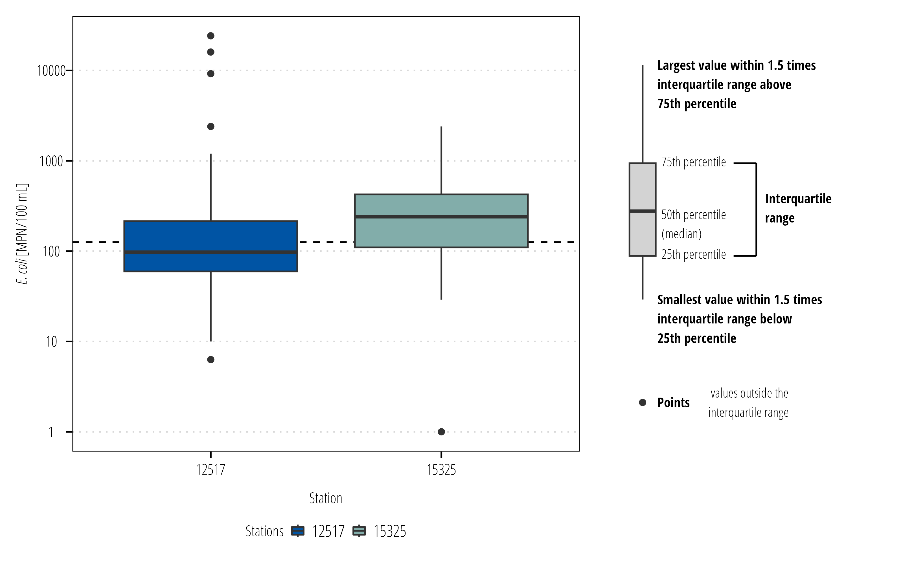

There are many different contexts to assess water quality data (water quality standards, risk assessments, ecological studies, paleoecology and on and on). This section will look at water quality data in the context of existing wate quality standards and communicating water quality data to stakeholders with that in mind.
6.1 Sources of Data
6.1.1 Sampling Data
The official data source for state water quality data used in surface water quality assessments in Texas is the Surface Water Quality Monitoring Information System (SWQMIS). My suggestion for obtaining station or water body specific data is to ask our employees that have authorized access to SWQMIS to make a data pull for you. There are two other options. First, TCEQ has a spatial explorer that you can point and click to download data by stream segment https://www80.tceq.texas.gov/SwqmisPublic/index.htm. This will download a pipe (|) delimited text file with all the water quality monitoring data for the segment. Second, the CRP Data Tool provides a way to query the SWQMIS by date, parameter code, parameter group, basin, segment, and station. Data is also provided as a pipe delimited text file with the queried data. Currently, there are no capabilities to make queries from within R.
The Water Quality Portal (WQP) is the EPA and USGS national database (formally STORET) for storing and providing discrete water quality monitoring data collected by states, tribes, federal and other partners. The WQP is handy for large or automated data downloads for various projects. One drawback is that the WQP and SWQMIS do not have common variables across both databases. For example, data from the WQP does not include Project Type codes that indicate the purpose for the monitoring event (flow biased storm samples or unbiased ambient samples) that might impact data analysis. WQP and SWQMIS do not use the same parameter codes and sometimes important data such as analysis methods or units get omitted in the data uploads to WQP. In general, for our state funded projects, use the SWQMIS database.
6.1.2 Standards
The most up to date EPA approved standards are available at EPA or at TCEQ. The applicable standard for a waterbody will vary based on assessed use and sometimes season. Do not assume the standard based on a nearby or upstream/downstream water body, double check the standards.
6.1.3 Assessment Summaries
TCEQ doesn’t publicly publish the data that goes into each water body assessment. However, summaries of assessed data by assessment unit are available. The full integrated report for the current cycle is available at https://www.tceq.texas.gov/waterquality/assessment. Within each integrated report is a link to the water body assessments by basin: https://www.tceq.texas.gov/waterquality/assessment/22twqi/22basinlist. These pdfs provide information about the use, criteria, data range, number of data assessed, number of excrescences, mean (or geomean) of data assessed and additional listing information.
6.2 Summarizing Data
6.3 Data
Get the data: These examples use the swqmispublicdata.txt data in the example data
SWQMIS column names have spaces and characters in them. This make it difficult to refer to those variables because object names cannot have spaces in R. The janitor package has a handy function to automatically format column/variable names in a dataframe and we will use it here.
# A tibble: 5,648 × 11
segment_id station_id station_description end_date collecting_entity
<chr> <fct> <chr> <date> <chr>
1 1502 12517 TRES PALACIOS CREEK AT FM… 1987-09-22 TCEQ REGIONAL OF…
2 1502 12517 TRES PALACIOS CREEK AT FM… 1987-09-22 TCEQ REGIONAL OF…
3 1502 12517 TRES PALACIOS CREEK AT FM… 1987-09-22 TCEQ REGIONAL OF…
4 1502 12517 TRES PALACIOS CREEK AT FM… 1987-09-22 TCEQ REGIONAL OF…
5 1502 12517 TRES PALACIOS CREEK AT FM… 1987-09-22 TCEQ REGIONAL OF…
6 1502 12517 TRES PALACIOS CREEK AT FM… 1987-09-22 TCEQ REGIONAL OF…
7 1502 12517 TRES PALACIOS CREEK AT FM… 1987-09-22 TCEQ REGIONAL OF…
8 1502 12517 TRES PALACIOS CREEK AT FM… 1987-09-22 TCEQ REGIONAL OF…
9 1502 12517 TRES PALACIOS CREEK AT FM… 1987-09-22 TCEQ REGIONAL OF…
10 1502 12517 TRES PALACIOS CREEK AT FM… 1987-09-22 TCEQ REGIONAL OF…
# ℹ 5,638 more rows
# ℹ 6 more variables: monitoring_type <chr>, composite_category <chr>,
# parameter_name <chr>, parameter_code <chr>, value <dbl>, rfa_tag_id <chr>
6.3.1 Summary Stats
The most common summary statistics are mean or geometric means. How we report this info depends on the project. For example, some projects might group all the stations within a single assessment unit together and report a mean. In other projects, station-specific means might be relevant. It is usually useful to explore both. An example of calculating station-specific geometric means is below:
#install.packages(DescTools)library(DescTools)df|># parameter code for E. colifilter(parameter_code=="31699")|>group_by(station_id)|>summarise(geomean =Gmean(value), min =min(value), max =max(value), n =n(), first_date =min(end_date), last_date =max(end_date))
# A tibble: 2 × 7
station_id geomean min max n first_date last_date
<fct> <dbl> <dbl> <dbl> <int> <date> <date>
1 12517 118. 6.3 24192 88 2000-12-20 2022-05-17
2 15325 210. 1 2400 35 2019-06-25 2022-05-17
6.3.2 Exceedance Probabilities
Another relevant measure is the number of exceedances of the criterion. This is relevant because we can use a binomial test to evaluate the probability that a water body is above an acceptable exceedance rate (typically 0.1 or 0.2 depending on the parameter). Smith et al. (2001) is highly recommended reading about why and how the binomal test is applied to assess water quality conditions.
The following example evaluates the exceedance rate for total phosphorus. For total phosphorus, the screening level in Texas is currently 0.69 mg/L which is evaluated using the binomal test and a 20% exceedance rate.
exceedance_df<-df|>## filter to total phosfilter(parameter_code=="00665")|>filter(end_date>=as.Date("2013-12-01")&end_date<=as.Date("2020-11-30"))|>filter(monitoring_type=="Routine - Monitoring not intentionally targeted toward any environmental condition or event")|>## create a new variable 1 = exceedance, 0 = non-exceedancemutate( exceedance =case_when(value<0.69~0,value>=0.69~1))|>summarize(total =n(), n_exceedance =sum(exceedance), probability =n_exceedance/total)exceedance_df
# A tibble: 1 × 3
total n_exceedance probability
<int> <dbl> <dbl>
1 18 2 0.111
This information nicely matches the assessment summary information provided for AU 1502_01 in the 2022 Texas Integrated Report.
If we want to run the binomial test on this data:
binom.test(x =exceedance_df$n_exceedance, n =exceedance_df$total, p =0.2, alternative ="g")
Exact binomial test
data: exceedance_df$n_exceedance and exceedance_df$total
number of successes = 2, number of trials = 18, p-value = 0.9009
alternative hypothesis: true probability of success is greater than 0.2
95 percent confidence interval:
0.02011068 1.00000000
sample estimates:
probability of success
0.1111111
The null hypothesis is that the probability of TP exceeding 0.69 is less than or equal to 0.2, which the binomial test failed to reject (p>0.05). Thus, the assessment unit meets the water quality screening level.
6.4 Figures
Typically, we develop at least the following water quality figures:
scatterplots of measured values over time by waterbody and station
boxplots or histograms displaying the distribution of measured values (upstream to downstream is particularly useful)
depending on the amount of data, a “rolling” statistic like exceedance probability, mean or geometric mean
# install.packages("ggtext")library(ggtext)ecoli<-df|>filter(parameter_code=="31699")## the E. coli critera is 126 MPN/100mLcritera<-126ggplot(ecoli)+## add a dotted line to show the water quality criteriageom_hline(yintercept =critera, linetype =2)+## measured points colored by the stationgeom_point(aes(end_date, value, color =station_id))+## this will add a label to the dotted lineannotate("label", x =max(ecoli$end_date)+60, y =critera, label ="126 MPN/100 mL", hjust =0, size =4, family ="OpenSansCondensed_TWRI")+## need to make some space at the end of the plot for## the label (adds 5% and 20% space to start and end)scale_x_date(expand =expansion(mult =c(0.05, 0.20)))+## use log transformed spacing on the y-axisscale_y_log10()+scale_color_discrete_twri(name ="Stations")+labs(x ="Date", y ="*E. coli* [MPN/100 mL]")+theme_TWRI_print()+theme(axis.title.y =element_markdown())
Boxplots are used to display distribution of values. The twriTemplates package has a function to include a boxplot legend that explains the components of a boxplot.
# install.packages("patchwork")library(patchwork)bplot<-ggplot(ecoli)+## add a dotted line to show the water quality criteriageom_hline(yintercept =critera, linetype =2)+## measured points colored by the stationgeom_boxplot(aes(station_id, value, fill =station_id))+scale_y_log10()+scale_fill_discrete_twri(name ="Stations")+labs(x ="Station", y ="*E. coli* [MPN/100 mL]")+theme_TWRI_print()+theme(axis.title.y =element_markdown())legend<-ggplot_box_legend(point_label =" values outside the\ninterquartile range")# the ggplot_box_legend function is in the twriTemplates packagebplot+legend+plot_layout(design ="112")

6.4.1 Rolling statistics
Rolling statistics are a useful way of displaying how a statistical measure (mean, geomean, etc.) changes over time. These are typically done with regularly measured data with equal intervals and is easily calculated using dplyr window functions. However, water quality data is unequal and we are generally interested in the statistic over a specific time window regardless of the number of samples in that window (so we can’t just look back \(n\) rows and calculate the statistic). The runner packages solves this by letting us set the window by amount of time.1runner() utilizes the date column and looks back to all the data within the time frame specified in the k argument, then uses that data to calculate the function in argument f.
1 Some of our older scripts used the tbrf package to do this. runner is now reccomended because it is much faster and more flexible.
We can also add confidence intervals to this plot. This is a good way to communicate how certain we are that the geometric mean is actually above or below the water quality criterion.
rollingmean<-rollingmean%>%mutate(Gmean_lwr =runner(x =value, k ="7 years", idx =end_date, f =function(x){DescTools::Gmean(x, conf.level =0.95)[2]}), Gmean_upr =runner(x =value, k ="7 years", idx =end_date, f =function(x){DescTools::Gmean(x, conf.level =0.95)[3]}))ggplot(rollingmean)+geom_hline(aes(yintercept =critera, linetype ="Criteria"), alpha =0.5)+geom_point(aes(end_date, value, color ="Measured *E. coli* value"))+geom_step(aes(end_date, Gmean, linetype ="7-yr rolling geomean"))+geom_step(aes(end_date, Gmean_upr, linetype ="95% confidence interval"))+geom_step(aes(end_date, Gmean_lwr, linetype ="95% confidence interval"))+scale_y_log10(limits =c(1,10000))+facet_wrap(~station_id, scales ="free_x")+scale_color_manual(values ="steelblue")+labs(x ="Date", y ="*E. coli* [MPN/100 mL]")+theme_TWRI_print()+theme(axis.title.y =element_markdown(),# turn off legend title legend.title =element_blank(), legend.text =element_markdown(),# turn off the horizontal gridlines# because they look similar to the # 95% confidence intervals panel.grid =element_blank())
6.5 Notes on figures
6.5.1 Log Transformations
Bacteria data is typically log distributed. Analysis of bacteria data almost always involve a log transformation to meet distributional assumptions in many statistical tests or regression models. Although in some fields, it is common to display these results in the log-transformed values, our standard practice is to back-transform the data and display the data with a log-transformed axis or scale.
The locations of the points on both plots are the same, but the scale on the left shows the log-transformed values. Conversely, the scale on the left shows the actual values but with scale log-transformed. For general audience it is easier to discern the magnitude difference between \(10\) and \(10,0000\)E. coli than between \(2.3026\) and \(9.21034\)\(log(E. coli)\). If your audience are microbiologists or some field where reporting log-values are standard and the audience members intuit differences in log vaalues, don’t follow this advice.
6.5.2 Error Bars
Error bars are conventionally used to display the uncertainty in estimates, not the variability or distribution of measured data. Box-plots and histograms are the appropriate graph to show measurement variability. Where error bars are used, indicate if the bars represent the standard error of the mean or confidence intervals. Do not use error bars for standard deviations or maximum/minimum measurements.
df<-readr::read_csv("data/easterwood.csv", col_types ="cDcnn")df%>%mutate(month =lubridate::month(date, label =TRUE), year =lubridate::year(date))%>%ggplot()+geom_boxplot(aes(month,dailymaximumdrybulbtemperature))+theme_TWRI_print()+labs(x ="Month", y ="Maximum daily temperature [°F]", title ="Boxplots Show Distribution", subtitle ="Distribution of Daily High Temperature")->p1df%>%mutate(month =lubridate::month(date, label =TRUE), year =lubridate::year(date))%>%group_by(month, year)%>%summarise(mean_monthly =mean(dailymaximumdrybulbtemperature), .groups ="drop_last")%>%summarise(mean_temp =mean(mean_monthly), mean_se =2*DescTools::MeanSE(mean_monthly))%>%ggplot()+geom_pointrange(aes(x =month, y =mean_temp, ymin =mean_temp-mean_se, ymax =mean_temp+mean_se))+theme_TWRI_print()+labs(x ="Month", y ="Maximum daily temperature [°F]", subtitle ="Estimated Mean Monthly High +/- 95% CI", title ="Error Bars Show Uncertaintity")->p2df%>%mutate(month =lubridate::month(date, label =TRUE), year =lubridate::year(date))%>%group_by(month)%>%summarise(mean_temp =mean(dailymaximumdrybulbtemperature), bad =2*sd(dailymaximumdrybulbtemperature))%>%ggplot()+geom_pointrange(aes(x =month, y =mean_temp, ymin =mean_temp-bad, ymax =mean_temp+bad))+theme_TWRI_print()+labs(x ="Month", y ="Maximum daily temperature [°F]", subtitle ="Estimated monthly mean high temperatures +/- 2 sd.", title ="Don't Do This!")->p3(p1+p2)/(p3+plot_spacer())
Smith, E.P., Ye, K., Hughes, C., and Shabman, L. 2001. Statistical Assessment of Violations of Water Quality Standards under Section 303(d) of the Clean Water Act. Environmental Science & Technology 35 (3): 606–12. https://doi.org/10.1021/es001159e.